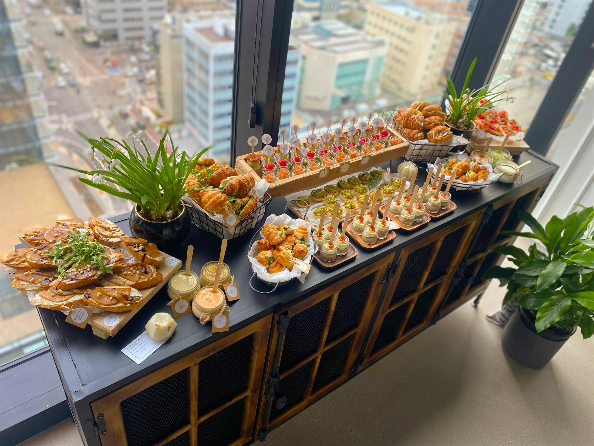

Employee Meal Plans
Consistent corporate lunch delivery for teams that need reliable meals and clear communication.

Corporate Meals & Office Lunches
Reimagined Nutrition gives companies a reliable food partner for office lunches, corporate meals, cafe support, and workplace events.
Ali Senatore, Executive Chef and Registered Dietitian Nutritionist (RDN), brings chef-level food and nutrition-aware planning to corporate service. Serving companies across Bergen County NJ, North Jersey, New York City, and Rockland County NY.
[HUBSPOT SETUP NEEDED: connect this proposal CTA to a HubSpot corporate/catering inquiry form, pipeline fields, and follow-up workflow.]
Why Companies Use Reimagined Nutrition
Corporate food needs to be consistent. It needs to arrive when expected. It needs to account for dietary restrictions once, clearly, without making the order feel complicated.
It also needs clear invoicing, reliable communication, and food that reflects well on the person who placed the order. Reimagined Nutrition supports office lunch catering, corporate lunch delivery, team meals, meetings, wellness lunches, and cafe-style service.
Proof
Reimagined Nutrition may name NASDAQ as a corporate cafe client. That matters because corporate food service depends on consistency: clear operations, thoughtful menus, dietary accommodation, and a vendor who can work at scale without making the client manage the details.
Service Formats
Consistent corporate lunch delivery for teams that need reliable meals and clear communication.
One-time corporate meals for meetings, working sessions, wellness lunches, and internal events.
Menus can be designed for simple drop-off service or a more supported event format when staffing and presentation matter.
Fresh seasonal fruit baskets for break rooms, client visits, wellness days, and simple office hospitality.
[ALI REVIEW NEEDED: confirm corporate delivery zones, lead times, ordering minimums if any, and cancellation terms before publishing operations copy]
Team Wellness
Corporate catering can be paired with individual nutrition counseling as a value-add benefit - a wellness perk that puts an RDN in front of your team, not just lunch.
Companies invest in wellness perks because the workday is where many habits happen. Better food choices can support focus, morale, and a more useful culture of care.
Start Here
Review the catering guide, then call Ali or send the basics: where it is happening, how many people you need to feed, the kind of service you have in mind, and any dietary needs she should know about. She will use the 15-minute call to make sure it is a fit, then shape the proposal around your team.
[HUBSPOT SETUP NEEDED: this CTA should feed the same HubSpot corporate/catering inquiry workflow before launch.]